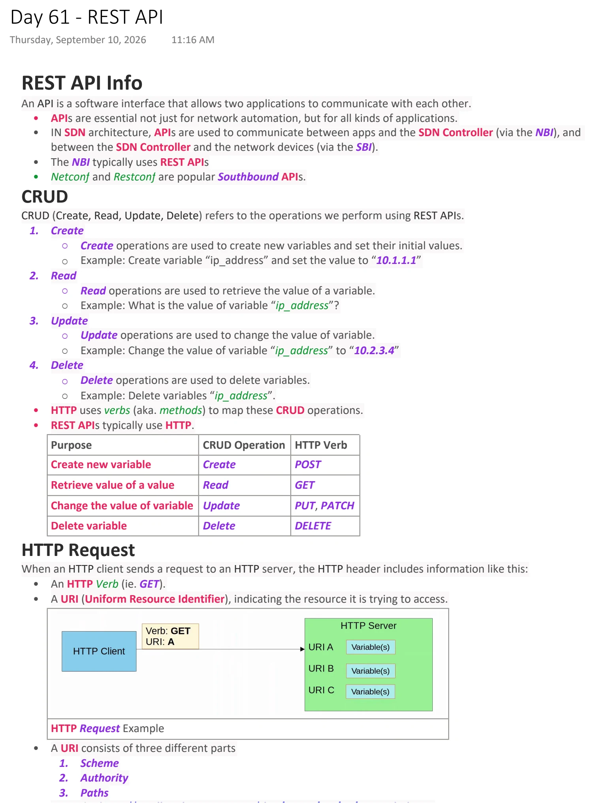
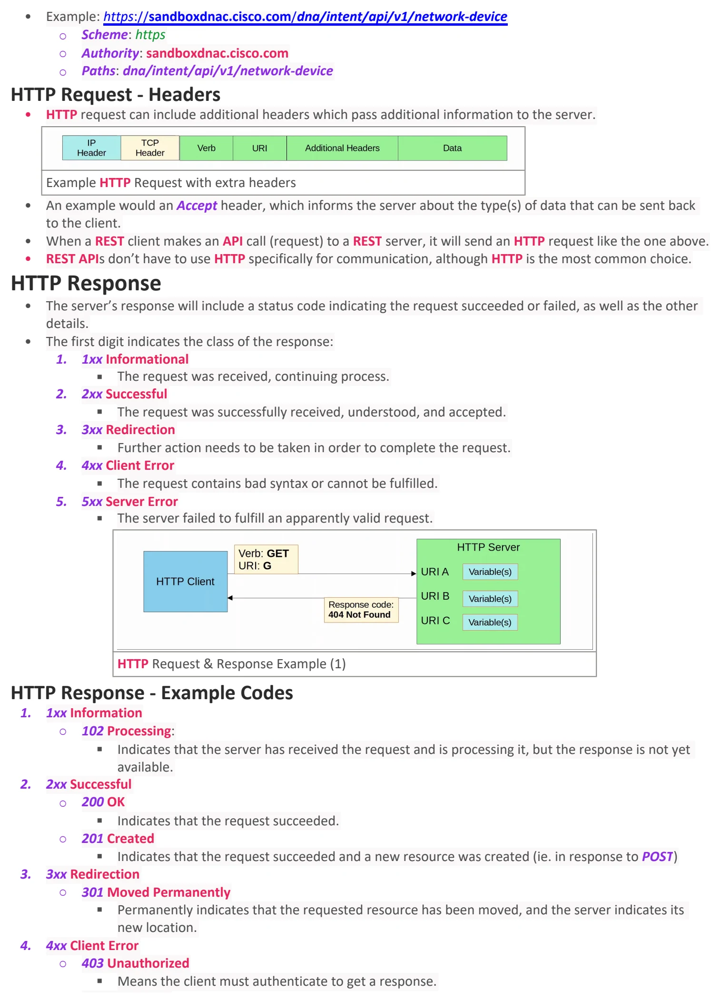
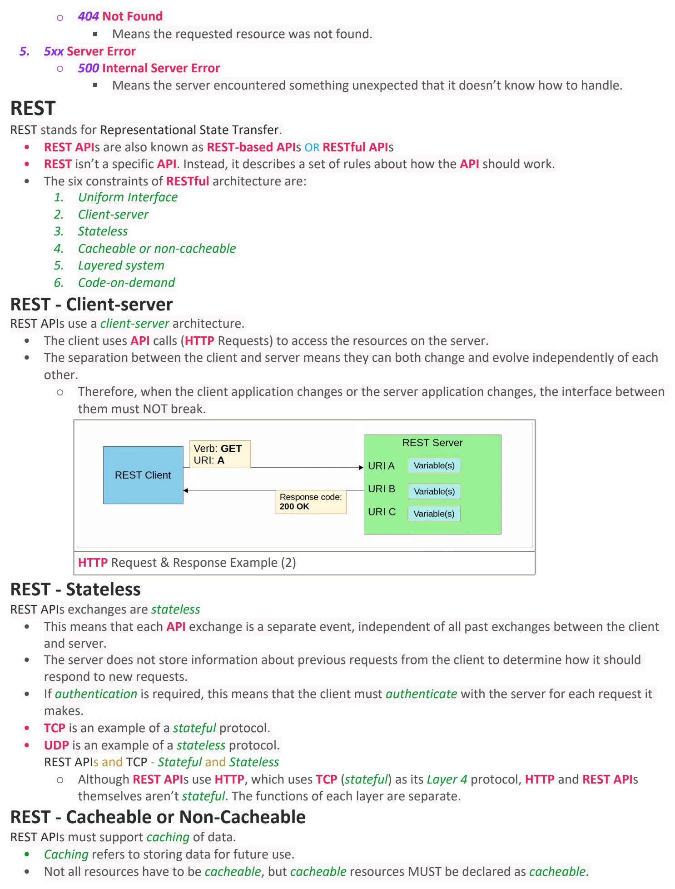

REST API
Download original PDF


Text view — REST API
Extracted from the original export. Diagrams and some formatting appear in the notes above.
Day 61 - REST API Thursday, September 10, 2026 11:16 AM REST API Info An API is a software interface that allows two applications to communicate with each other. • APIs are essential not just for network automation, but for all kinds of applications. • IN SDN architecture, APIs are used to communicate between apps and the SDN Controller (via the NBI), and between the SDN Controller and the network devices (via the SBI). • The NBI typically uses REST APIs • Netconf and Restconf are popular Southbound APIs. CRUD CRUD (Create, Read, Update, Delete) refers to the operations we perform using REST APIs. 1. Create ○ Create operations are used to create new variables and set their initial values. ○ Example: Create variable “ip_address” and set the value to “10.1.1.1” 2. Read ○ Read operations are used to retrieve the value of a variable. ○ Example: What is the value of variable “ip_address”? 3. Update ○ Update operations are used to change the value of variable. ○ Example: Change the value of variable “ip_address” to “10.2.3.4” 4. Delete ○ Delete operations are used to delete variables. ○ Example: Delete variables “ip_address”. • HTTP uses verbs (aka. methods) to map these CRUD operations. • REST APIs typically use HTTP. Purpose CRUD Operation HTTP Verb Create new variable Create POST Retrieve value of a value Read GET Change the value of variable Update PUT, PATCH Delete variable Delete DELETE HTTP Request When an HTTP client sends a request to an HTTP server, the HTTP header includes information like this: • An HTTP Verb (ie. GET). • A URI (Uniform Resource Identifier), indicating the resource it is trying to access. HTTP Request Example • A URI consists of three different parts 1. Scheme 2. Authority 3. Paths • Example: https://sandboxdnac.cisco.com/dna/intent/api/v1/network-device ○ Scheme: https ○ Authority: sandboxdnac.cisco.com ○ Paths: dna/intent/api/v1/network-device HTTP Request - Headers • HTTP request can include additional headers which pass additional information to the server. Example HTTP Request with extra headers • An example would an Accept header, which informs the server about the type(s) of data that can be sent back to the client. • When a REST client makes an API call (request) to a REST server, it will send an HTTP request like the one above. • REST APIs don’t have to use HTTP specifically for communication, although HTTP is the most common choice. HTTP Response • The server’s response will include a status code indicating the request succeeded or failed, as well as the other details. • The first digit indicates the class of the response: 1. 1xx Informational § The request was received, continuing process. 2. 2xx Successful § The request was successfully received, understood, and accepted. 3. 3xx Redirection § Further action needs to be taken in order to complete the request. 4. 4xx Client Error § The request contains bad syntax or cannot be fulfilled. 5. 5xx Server Error § The server failed to fulfill an apparently valid request. HTTP Request & Response Example (1) HTTP Response - Example Codes 1. 1xx Information ○ 102 Processing: § Indicates that the server has received the request and is processing it, but the response is not yet available. 2. 2xx Successful ○ 200 OK § Indicates that the request succeeded. ○ 201 Created § Indicates that the request succeeded and a new resource was created (ie. in response to POST) 3. 3xx Redirection ○ 301 Moved Permanently § Permanently indicates that the requested resource has been moved, and the server indicates its new location. 4. 4xx Client Error ○ 403 Unauthorized § Means the client must authenticate to get a response. ○ 404 Not Found § Means the requested resource was not found. 5. 5xx Server Error ○ 500 Internal Server Error § Means the server encountered something unexpected that it doesn’t know how to handle. REST REST stands for Representational State Transfer. • REST APIs are also known as REST-based APIs OR RESTful APIs • REST isn’t a specific API. Instead, it describes a set of rules about how the API should work. • The six constraints of RESTful architecture are: 1. Uniform Interface 2. Client-server 3. Stateless 4. Cacheable or non-cacheable 5. Layered system 6. Code-on-demand REST - Client-server REST APIs use a client-server architecture. • The client uses API calls (HTTP Requests) to access the resources on the server. • The separation between the client and server means they can both change and evolve independently of each other. ○ Therefore, when the client application changes or the server application changes, the interface between them must NOT break. HTTP Request & Response Example (2) REST - Stateless REST APIs exchanges are stateless • This means that each API exchange is a separate event, independent of all past exchanges between the client and server. • The server does not store information about previous requests from the client to determine how it should respond to new requests. • If authentication is required, this means that the client must authenticate with the server for each request it makes. • TCP is an example of a stateful protocol. • UDP is an example of a stateless protocol. REST APIs and TCP - Stateful and Stateless ○ Although REST APIs use HTTP, which uses TCP (stateful) as its Layer 4 protocol, HTTP and REST APIs themselves aren’t stateful. The functions of each layer are separate. REST - Cacheable or Non-Cacheable REST APIs must support caching of data. • Caching refers to storing data for future use. • Not all resources have to be cacheable, but cacheable resources MUST be declared as cacheable. Day 61 - REST API Thursday, September 10, 2026 11:16 AM REST API Info An API is a software interface that allows two applications to communicate with each other. • APIs are essential not just for network automation, but for all kinds of applications. • IN SDN architecture, APIs are used to communicate between apps and the SDN Controller (via the NBI), and between the SDN Controller and the network devices (via the SBI). • The NBI typically uses REST APIs • Netconf and Restconf are popular Southbound APIs. CRUD CRUD (Create, Read, Update, Delete) refers to the operations we perform using REST APIs. 1. Create ○ Create operations are used to create new variables and set their initial values. ○ Example: Create variable “ip_address” and set the value to “10.1.1.1” 2. Read ○ Read operations are used to retrieve the value of a variable. ○ Example: What is the value of variable “ip_address”? 3. Update ○ Update operations are used to change the value of variable. ○ Example: Change the value of variable “ip_address” to “10.2.3.4” 4. Delete ○ Delete operations are used to delete variables. ○ Example: Delete variables “ip_address”. • HTTP uses verbs (aka. methods) to map these CRUD operations. • REST APIs typically use HTTP. Purpose CRUD Operation HTTP Verb Create new variable Create POST Retrieve value of a value Read GET Change the value of variable Update PUT, PATCH Delete variable Delete DELETE HTTP Request When an HTTP client sends a request to an HTTP server, the HTTP header includes information like this: • An HTTP Verb (ie. GET). • A URI (Uniform Resource Identifier), indicating the resource it is trying to access. HTTP Request Example • A URI consists of three different parts 1. Scheme 2. Authority 3. Paths • Example: https://sandboxdnac.cisco.com/dna/intent/api/v1/network-device ○ Scheme: https ○ Authority: sandboxdnac.cisco.com ○ Paths: dna/intent/api/v1/network-device HTTP Request - Headers • HTTP request can include additional headers which pass additional information to the server. Example HTTP Request with extra headers • An example would an Accept header, which informs the server about the type(s) of data that can be sent back to the client. • When a REST client makes an API call (request) to a REST server, it will send an HTTP request like the one above. • REST APIs don’t have to use HTTP specifically for communication, although HTTP is the most common choice. HTTP Response • The server’s response will include a status code indicating the request succeeded or failed, as well as the other details. • The first digit indicates the class of the response: 1. 1xx Informational § The request was received, continuing process. 2. 2xx Successful § The request was successfully received, understood, and accepted. 3. 3xx Redirection § Further action needs to be taken in order to complete the request. 4. 4xx Client Error § The request contains bad syntax or cannot be fulfilled. 5. 5xx Server Error § The server failed to fulfill an apparently valid request. HTTP Request & Response Example (1) HTTP Response - Example Codes 1. 1xx Information ○ 102 Processing: § Indicates that the server has received the request and is processing it, but the response is not yet available. 2. 2xx Successful ○ 200 OK § Indicates that the request succeeded. ○ 201 Created § Indicates that the request succeeded and a new resource was created (ie. in response to POST) 3. 3xx Redirection ○ 301 Moved Permanently § Permanently indicates that the requested resource has been moved, and the server indicates its new location. 4. 4xx Client Error ○ 403 Unauthorized § Means the client must authenticate to get a response. ○ 404 Not Found § Means the requested resource was not found. 5. 5xx Server Error ○ 500 Internal Server Error § Means the server encountered something unexpected that it doesn’t know how to handle. REST REST stands for Representational State Transfer. • REST APIs are also known as REST-based APIs OR RESTful APIs • REST isn’t a specific API. Instead, it describes a set of rules about how the API should work. • The six constraints of RESTful architecture are: 1. Uniform Interface 2. Client-server 3. Stateless 4. Cacheable or non-cacheable 5. Layered system 6. Code-on-demand REST - Client-server REST APIs use a client-server architecture. • The client uses API calls (HTTP Requests) to access the resources on the server. • The separation between the client and server means they can both change and evolve independently of each other. ○ Therefore, when the client application changes or the server application changes, the interface between them must NOT break. HTTP Request & Response Example (2) REST - Stateless REST APIs exchanges are stateless • This means that each API exchange is a separate event, independent of all past exchanges between the client and server. • The server does not store information about previous requests from the client to determine how it should respond to new requests. • If authentication is required, this means that the client must authenticate with the server for each request it makes. • TCP is an example of a stateful protocol. • UDP is an example of a stateless protocol. REST APIs and TCP - Stateful and Stateless ○ Although REST APIs use HTTP, which uses TCP (stateful) as its Layer 4 protocol, HTTP and REST APIs themselves aren’t stateful. The functions of each layer are separate. REST - Cacheable or Non-Cacheable REST APIs must support caching of data. • Caching refers to storing data for future use. • Not all resources have to be cacheable, but cacheable resources MUST be declared as cacheable. Day 61 - REST API Thursday, September 10, 2026 11:16 AM REST API Info An API is a software interface that allows two applications to communicate with each other. • APIs are essential not just for network automation, but for all kinds of applications. • IN SDN architecture, APIs are used to communicate between apps and the SDN Controller (via the NBI), and between the SDN Controller and the network devices (via the SBI). • The NBI typically uses REST APIs • Netconf and Restconf are popular Southbound APIs. CRUD CRUD (Create, Read, Update, Delete) refers to the operations we perform using REST APIs. 1. Create ○ Create operations are used to create new variables and set their initial values. ○ Example: Create variable “ip_address” and set the value to “10.1.1.1” 2. Read ○ Read operations are used to retrieve the value of a variable. ○ Example: What is the value of variable “ip_address”? 3. Update ○ Update operations are used to change the value of variable. ○ Example: Change the value of variable “ip_address” to “10.2.3.4” 4. Delete ○ Delete operations are used to delete variables. ○ Example: Delete variables “ip_address”. • HTTP uses verbs (aka. methods) to map these CRUD operations. • REST APIs typically use HTTP. Purpose CRUD Operation HTTP Verb Create new variable Create POST Retrieve value of a value Read GET Change the value of variable Update PUT, PATCH Delete variable Delete DELETE HTTP Request When an HTTP client sends a request to an HTTP server, the HTTP header includes information like this: • An HTTP Verb (ie. GET). • A URI (Uniform Resource Identifier), indicating the resource it is trying to access. HTTP Request Example • A URI consists of three different parts 1. Scheme 2. Authority 3. Paths • Example: https://sandboxdnac.cisco.com/dna/intent/api/v1/network-device ○ Scheme: https ○ Authority: sandboxdnac.cisco.com ○ Paths: dna/intent/api/v1/network-device HTTP Request - Headers • HTTP request can include additional headers which pass additional information to the server. Example HTTP Request with extra headers • An example would an Accept header, which informs the server about the type(s) of data that can be sent back to the client. • When a REST client makes an API call (request) to a REST server, it will send an HTTP request like the one above. • REST APIs don’t have to use HTTP specifically for communication, although HTTP is the most common choice. HTTP Response • The server’s response will include a status code indicating the request succeeded or failed, as well as the other details. • The first digit indicates the class of the response: 1. 1xx Informational § The request was received, continuing process. 2. 2xx Successful § The request was successfully received, understood, and accepted. 3. 3xx Redirection § Further action needs to be taken in order to complete the request. 4. 4xx Client Error § The request contains bad syntax or cannot be fulfilled. 5. 5xx Server Error § The server failed to fulfill an apparently valid request. HTTP Request & Response Example (1) HTTP Response - Example Codes 1. 1xx Information ○ 102 Processing: § Indicates that the server has received the request and is processing it, but the response is not yet available. 2. 2xx Successful ○ 200 OK § Indicates that the request succeeded. ○ 201 Created § Indicates that the request succeeded and a new resource was created (ie. in response to POST) 3. 3xx Redirection ○ 301 Moved Permanently § Permanently indicates that the requested resource has been moved, and the server indicates its new location. 4. 4xx Client Error ○ 403 Unauthorized § Means the client must authenticate to get a response. ○ 404 Not Found § Means the requested resource was not found. 5. 5xx Server Error ○ 500 Internal Server Error § Means the server encountered something unexpected that it doesn’t know how to handle. REST REST stands for Representational State Transfer. • REST APIs are also known as REST-based APIs OR RESTful APIs • REST isn’t a specific API. Instead, it describes a set of rules about how the API should work. • The six constraints of RESTful architecture are: 1. Uniform Interface 2. Client-server 3. Stateless 4. Cacheable or non-cacheable 5. Layered system 6. Code-on-demand REST - Client-server REST APIs use a client-server architecture. • The client uses API calls (HTTP Requests) to access the resources on the server. • The separation between the client and server means they can both change and evolve independently of each other. ○ Therefore, when the client application changes or the server application changes, the interface between them must NOT break. HTTP Request & Response Example (2) REST - Stateless REST APIs exchanges are stateless • This means that each API exchange is a separate event, independent of all past exchanges between the client and server. • The server does not store information about previous requests from the client to determine how it should respond to new requests. • If authentication is required, this means that the client must authenticate with the server for each request it makes. • TCP is an example of a stateful protocol. • UDP is an example of a stateless protocol. REST APIs and TCP - Stateful and Stateless ○ Although REST APIs use HTTP, which uses TCP (stateful) as its Layer 4 protocol, HTTP and REST APIs themselves aren’t stateful. The functions of each layer are separate. REST - Cacheable or Non-Cacheable REST APIs must support caching of data. • Caching refers to storing data for future use. • Not all resources have to be cacheable, but cacheable resources MUST be declared as cacheable.